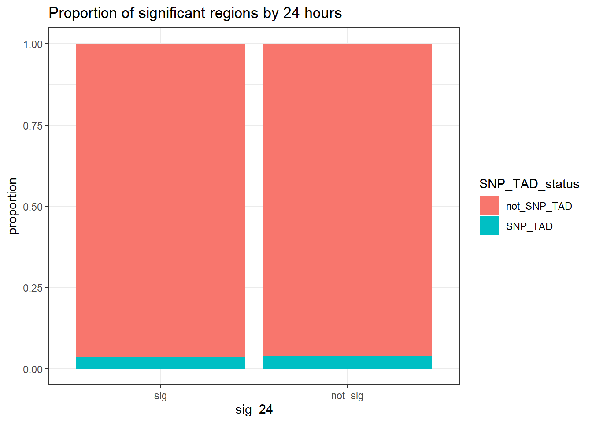
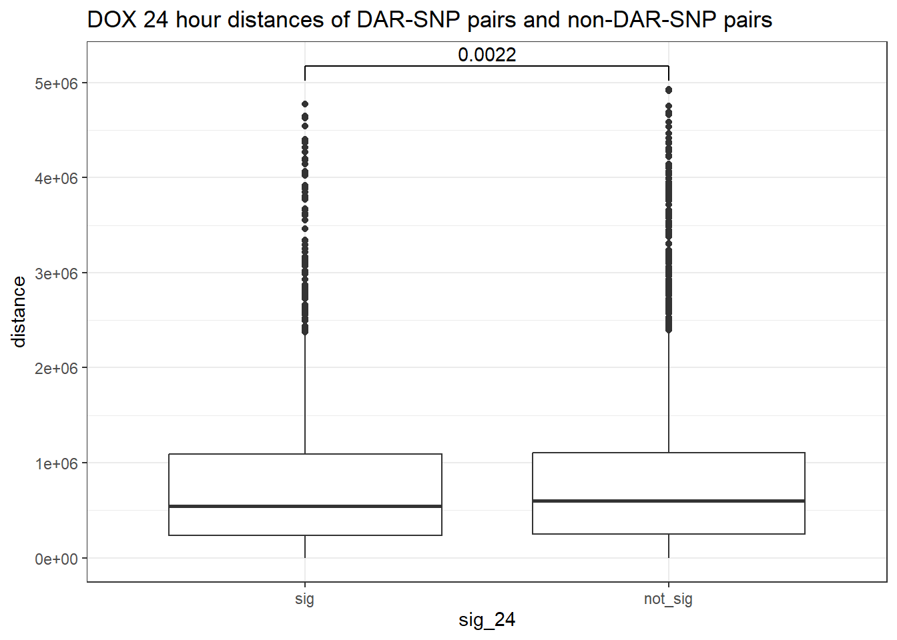
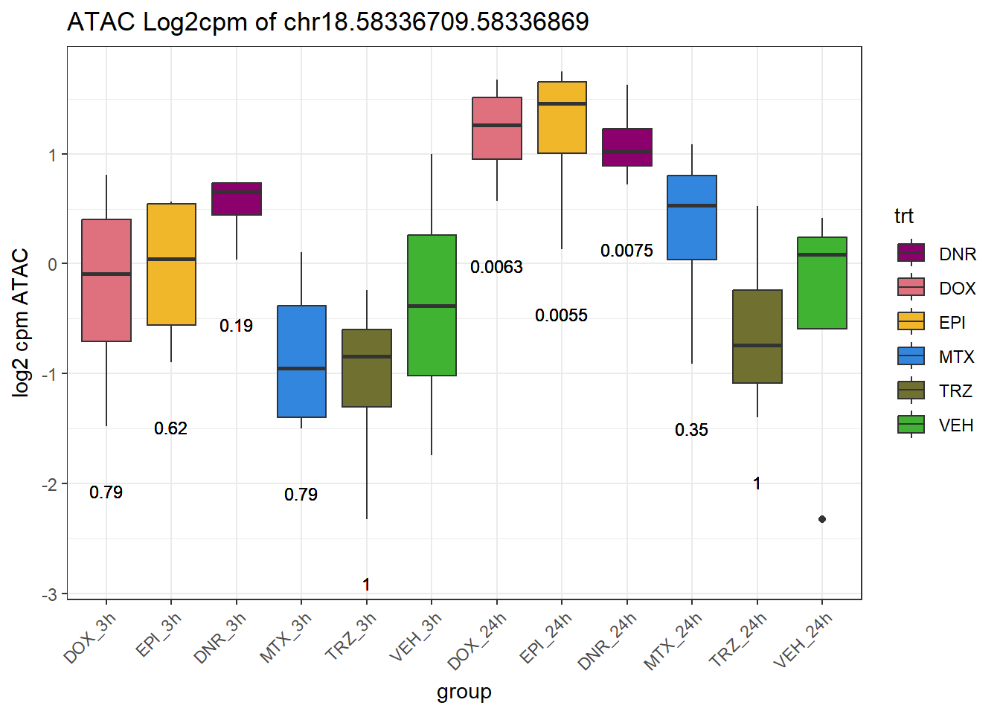
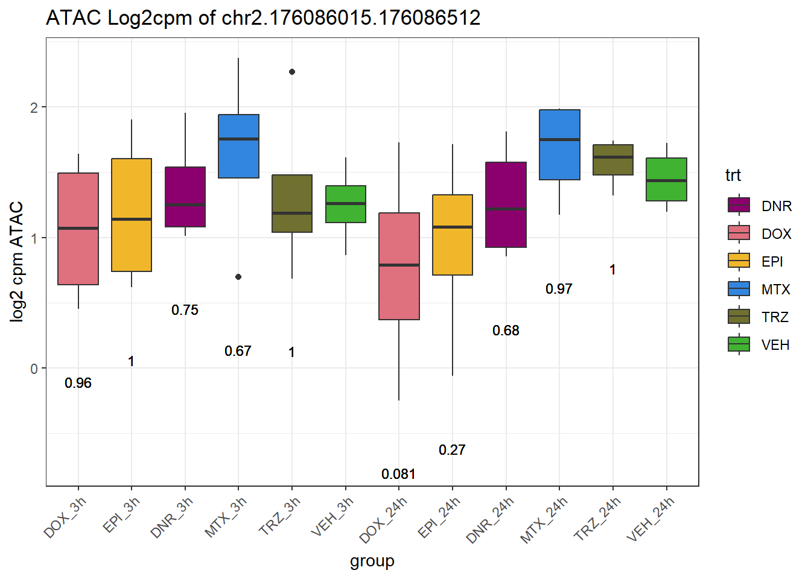
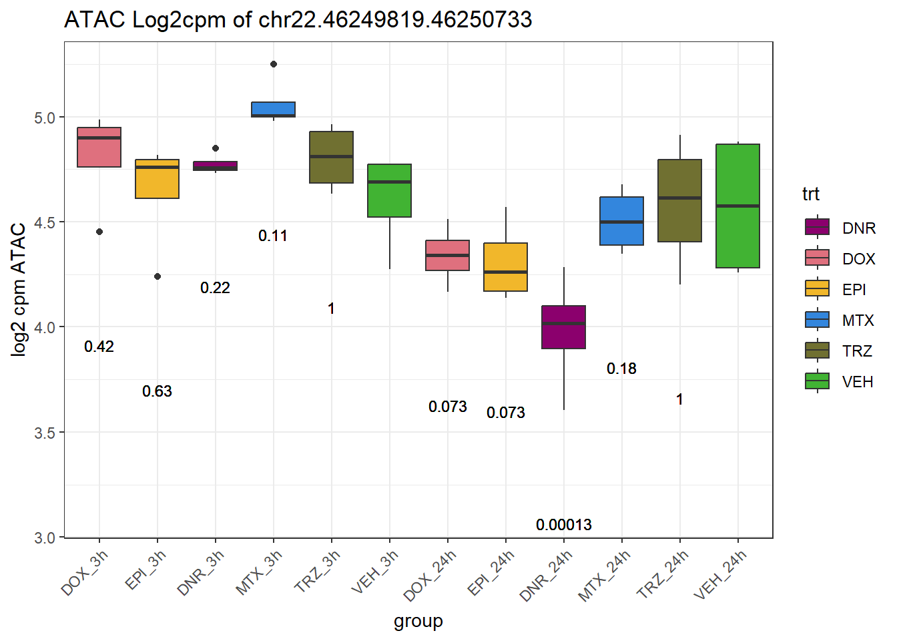
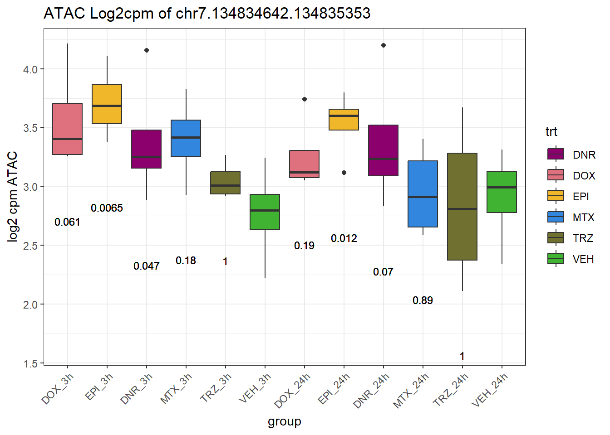
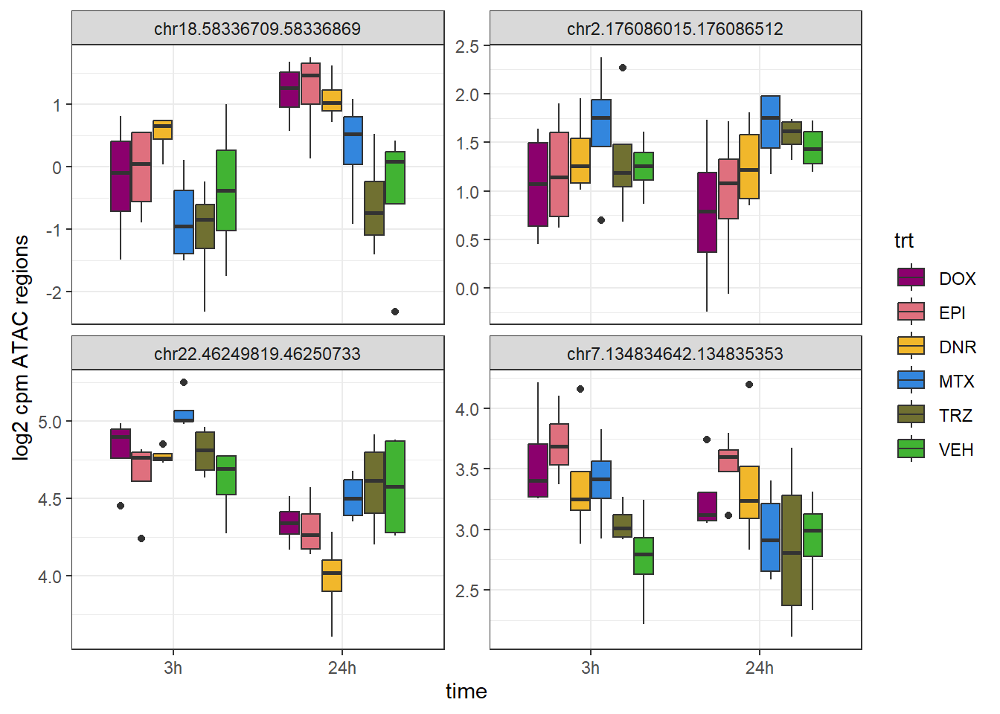
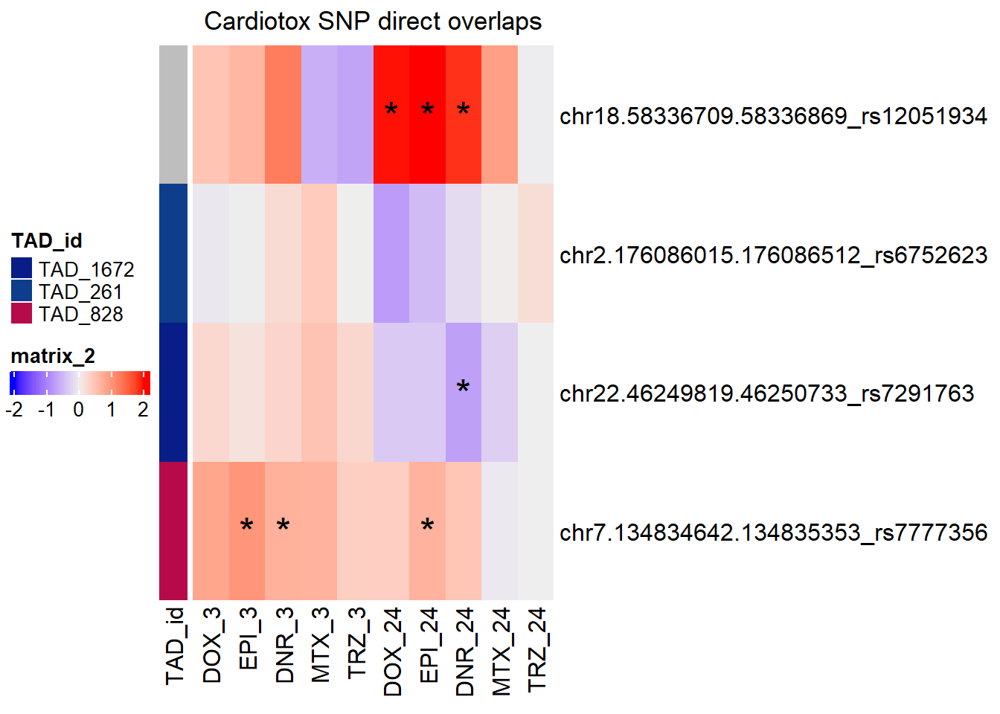

SNP & TAD
Renee Matthews
2025-06-10
Last updated: 2025-08-06
Checks: 7 0
Knit directory: ATAC_learning/
This reproducible R Markdown analysis was created with workflowr (version 1.7.1). The Checks tab describes the reproducibility checks that were applied when the results were created. The Past versions tab lists the development history.
Great! Since the R Markdown file has been committed to the Git repository, you know the exact version of the code that produced these results.
Great job! The global environment was empty. Objects defined in the global environment can affect the analysis in your R Markdown file in unknown ways. For reproduciblity it’s best to always run the code in an empty environment.
The command set.seed(20231016) was run prior to running
the code in the R Markdown file. Setting a seed ensures that any results
that rely on randomness, e.g. subsampling or permutations, are
reproducible.
Great job! Recording the operating system, R version, and package versions is critical for reproducibility.
Nice! There were no cached chunks for this analysis, so you can be confident that you successfully produced the results during this run.
Great job! Using relative paths to the files within your workflowr project makes it easier to run your code on other machines.
Great! You are using Git for version control. Tracking code development and connecting the code version to the results is critical for reproducibility.
The results in this page were generated with repository version 25136ab. See the Past versions tab to see a history of the changes made to the R Markdown and HTML files.
Note that you need to be careful to ensure that all relevant files for
the analysis have been committed to Git prior to generating the results
(you can use wflow_publish or
wflow_git_commit). workflowr only checks the R Markdown
file, but you know if there are other scripts or data files that it
depends on. Below is the status of the Git repository when the results
were generated:
Ignored files:
Ignored: .RData
Ignored: .Rhistory
Ignored: .Rproj.user/
Ignored: analysis/H3K27ac_integration_noM.Rmd
Ignored: data/ACresp_SNP_table.csv
Ignored: data/ARR_SNP_table.csv
Ignored: data/All_merged_peaks.tsv
Ignored: data/CAD_gwas_dataframe.RDS
Ignored: data/CTX_SNP_table.csv
Ignored: data/Collapsed_expressed_NG_peak_table.csv
Ignored: data/DEG_toplist_sep_n45.RDS
Ignored: data/FRiP_first_run.txt
Ignored: data/Final_four_data/
Ignored: data/Frip_1_reads.csv
Ignored: data/Frip_2_reads.csv
Ignored: data/Frip_3_reads.csv
Ignored: data/Frip_4_reads.csv
Ignored: data/Frip_5_reads.csv
Ignored: data/Frip_6_reads.csv
Ignored: data/GO_KEGG_analysis/
Ignored: data/HF_SNP_table.csv
Ignored: data/Ind1_75DA24h_dedup_peaks.csv
Ignored: data/Ind1_TSS_peaks.RDS
Ignored: data/Ind1_firstfragment_files.txt
Ignored: data/Ind1_fragment_files.txt
Ignored: data/Ind1_peaks_list.RDS
Ignored: data/Ind1_summary.txt
Ignored: data/Ind2_TSS_peaks.RDS
Ignored: data/Ind2_fragment_files.txt
Ignored: data/Ind2_peaks_list.RDS
Ignored: data/Ind2_summary.txt
Ignored: data/Ind3_TSS_peaks.RDS
Ignored: data/Ind3_fragment_files.txt
Ignored: data/Ind3_peaks_list.RDS
Ignored: data/Ind3_summary.txt
Ignored: data/Ind4_79B24h_dedup_peaks.csv
Ignored: data/Ind4_TSS_peaks.RDS
Ignored: data/Ind4_V24h_fraglength.txt
Ignored: data/Ind4_fragment_files.txt
Ignored: data/Ind4_fragment_filesN.txt
Ignored: data/Ind4_peaks_list.RDS
Ignored: data/Ind4_summary.txt
Ignored: data/Ind5_TSS_peaks.RDS
Ignored: data/Ind5_fragment_files.txt
Ignored: data/Ind5_fragment_filesN.txt
Ignored: data/Ind5_peaks_list.RDS
Ignored: data/Ind5_summary.txt
Ignored: data/Ind6_TSS_peaks.RDS
Ignored: data/Ind6_fragment_files.txt
Ignored: data/Ind6_peaks_list.RDS
Ignored: data/Ind6_summary.txt
Ignored: data/Knowles_4.RDS
Ignored: data/Knowles_5.RDS
Ignored: data/Knowles_6.RDS
Ignored: data/LiSiLTDNRe_TE_df.RDS
Ignored: data/MI_gwas.RDS
Ignored: data/SNP_GWAS_PEAK_MRC_id
Ignored: data/SNP_GWAS_PEAK_MRC_id.csv
Ignored: data/SNP_gene_cat_list.tsv
Ignored: data/SNP_supp_schneider.RDS
Ignored: data/TE_info/
Ignored: data/TFmapnames.RDS
Ignored: data/all_TSSE_scores.RDS
Ignored: data/all_four_filtered_counts.txt
Ignored: data/aln_run1_results.txt
Ignored: data/anno_ind1_DA24h.RDS
Ignored: data/anno_ind4_V24h.RDS
Ignored: data/annotated_gwas_SNPS.csv
Ignored: data/background_n45_he_peaks.RDS
Ignored: data/cardiac_muscle_FRIP.csv
Ignored: data/cardiomyocyte_FRIP.csv
Ignored: data/col_ng_peak.csv
Ignored: data/cormotif_full_4_run.RDS
Ignored: data/cormotif_full_4_run_he.RDS
Ignored: data/cormotif_full_6_run.RDS
Ignored: data/cormotif_full_6_run_he.RDS
Ignored: data/cormotif_probability_45_list.csv
Ignored: data/cormotif_probability_45_list_he.csv
Ignored: data/cormotif_probability_all_6_list.csv
Ignored: data/cormotif_probability_all_6_list_he.csv
Ignored: data/datasave.RDS
Ignored: data/embryo_heart_FRIP.csv
Ignored: data/enhancer_list_ENCFF126UHK.bed
Ignored: data/enhancerdata/
Ignored: data/filt_Peaks_efit2.RDS
Ignored: data/filt_Peaks_efit2_bl.RDS
Ignored: data/filt_Peaks_efit2_n45.RDS
Ignored: data/first_Peaksummarycounts.csv
Ignored: data/first_run_frag_counts.txt
Ignored: data/full_bedfiles/
Ignored: data/gene_ref.csv
Ignored: data/gwas_1_dataframe.RDS
Ignored: data/gwas_2_dataframe.RDS
Ignored: data/gwas_3_dataframe.RDS
Ignored: data/gwas_4_dataframe.RDS
Ignored: data/gwas_5_dataframe.RDS
Ignored: data/high_conf_peak_counts.csv
Ignored: data/high_conf_peak_counts.txt
Ignored: data/high_conf_peaks_bl_counts.txt
Ignored: data/high_conf_peaks_counts.txt
Ignored: data/hits_files/
Ignored: data/hyper_files/
Ignored: data/hypo_files/
Ignored: data/ind1_DA24hpeaks.RDS
Ignored: data/ind1_TSSE.RDS
Ignored: data/ind2_TSSE.RDS
Ignored: data/ind3_TSSE.RDS
Ignored: data/ind4_TSSE.RDS
Ignored: data/ind4_V24hpeaks.RDS
Ignored: data/ind5_TSSE.RDS
Ignored: data/ind6_TSSE.RDS
Ignored: data/initial_complete_stats_run1.txt
Ignored: data/left_ventricle_FRIP.csv
Ignored: data/median_24_lfc.RDS
Ignored: data/median_3_lfc.RDS
Ignored: data/mergedPeads.gff
Ignored: data/mergedPeaks.gff
Ignored: data/motif_list_full
Ignored: data/motif_list_n45
Ignored: data/motif_list_n45.RDS
Ignored: data/multiqc_fastqc_run1.txt
Ignored: data/multiqc_fastqc_run2.txt
Ignored: data/multiqc_genestat_run1.txt
Ignored: data/multiqc_genestat_run2.txt
Ignored: data/my_hc_filt_counts.RDS
Ignored: data/my_hc_filt_counts_n45.RDS
Ignored: data/n45_bedfiles/
Ignored: data/n45_files
Ignored: data/other_papers/
Ignored: data/peakAnnoList_1.RDS
Ignored: data/peakAnnoList_2.RDS
Ignored: data/peakAnnoList_24_full.RDS
Ignored: data/peakAnnoList_24_n45.RDS
Ignored: data/peakAnnoList_3.RDS
Ignored: data/peakAnnoList_3_full.RDS
Ignored: data/peakAnnoList_3_n45.RDS
Ignored: data/peakAnnoList_4.RDS
Ignored: data/peakAnnoList_5.RDS
Ignored: data/peakAnnoList_6.RDS
Ignored: data/peakAnnoList_Eight.RDS
Ignored: data/peakAnnoList_full_motif.RDS
Ignored: data/peakAnnoList_n45_motif.RDS
Ignored: data/siglist_full.RDS
Ignored: data/siglist_n45.RDS
Ignored: data/summarized_peaks_dataframe.txt
Ignored: data/summary_peakIDandReHeat.csv
Ignored: data/test.list.RDS
Ignored: data/testnames.txt
Ignored: data/toplist_6.RDS
Ignored: data/toplist_full.RDS
Ignored: data/toplist_full_DAR_6.RDS
Ignored: data/toplist_n45.RDS
Ignored: data/trimmed_seq_length.csv
Ignored: data/unclassified_full_set_peaks.RDS
Ignored: data/unclassified_n45_set_peaks.RDS
Ignored: data/xstreme/
Untracked files:
Untracked: RNA_seq_integration.Rmd
Untracked: Rplot.pdf
Untracked: Sig_meta
Untracked: analysis/.gitignore
Untracked: analysis/Cormotif_analysis_testing diff.Rmd
Untracked: analysis/Diagnosis-tmm.Rmd
Untracked: analysis/Expressed_RNA_associations.Rmd
Untracked: analysis/Figure_1_preprint.Rmd
Untracked: analysis/Figure_2_preprint.Rmd
Untracked: analysis/Figure_3_preprint.Rmd
Untracked: analysis/Figure_4_preprint.Rmd
Untracked: analysis/Figure_5_preprint.Rmd
Untracked: analysis/Figure_6_preprint.Rmd
Untracked: analysis/Figure_7_preprint.Rmd
Untracked: analysis/IF_counts_20x.Rmd
Untracked: analysis/Jaspar_motif_DAR_paper.Rmd
Untracked: analysis/LFC_corr.Rmd
Untracked: analysis/SVA.Rmd
Untracked: analysis/Supp_Fig_1-11_preprint.Rmd
Untracked: analysis/Supp_Fig_12-19_preprint.Rmd
Untracked: analysis/Tan2020.Rmd
Untracked: analysis/making_master_peaks_list.Rmd
Untracked: analysis/my_hc_filt_counts.csv
Untracked: code/Concatenations_for_export.R
Untracked: code/IGV_snapshot_code.R
Untracked: code/LongDARlist.R
Untracked: code/just_for_Fun.R
Untracked: my_plot.pdf
Untracked: my_plot.png
Untracked: output/cormotif_probability_45_list.csv
Untracked: output/cormotif_probability_all_6_list.csv
Untracked: setup.RData
Unstaged changes:
Modified: ATAC_learning.Rproj
Modified: analysis/AC_shared_analysis.Rmd
Modified: analysis/AF_HF_SNPs.Rmd
Modified: analysis/Cardiotox_SNPs.Rmd
Modified: analysis/Cormotif_analysis.Rmd
Modified: analysis/DEG_analysis.Rmd
Modified: analysis/GO_analysis_DAR_paper.Rmd
Modified: analysis/H3K27ac_integration.Rmd
Modified: analysis/Jaspar_motif.Rmd
Modified: analysis/Jaspar_motif_ff.Rmd
Modified: analysis/SNP_TAD_peaks.Rmd
Modified: analysis/TE_analysis_norm.Rmd
Modified: analysis/final_four_analysis.Rmd
Modified: analysis/index.Rmd
Note that any generated files, e.g. HTML, png, CSS, etc., are not included in this status report because it is ok for generated content to have uncommitted changes.
These are the previous versions of the repository in which changes were
made to the R Markdown (analysis/SNP_TAD_peaks_paper.Rmd)
and HTML (docs/SNP_TAD_peaks_paper.html) files. If you’ve
configured a remote Git repository (see ?wflow_git_remote),
click on the hyperlinks in the table below to view the files as they
were in that past version.
| File | Version | Author | Date | Message |
|---|---|---|---|---|
| Rmd | 25136ab | reneeisnowhere | 2025-08-06 | first commit |
library(tidyverse)
library(kableExtra)
library(broom)
library(RColorBrewer)
library(ChIPseeker)
library(ChIPpeakAnno)
library("TxDb.Hsapiens.UCSC.hg38.knownGene")
library("org.Hs.eg.db")
library(rtracklayer)
library(edgeR)
library(ggfortify)
library(limma)
library(readr)
library(BiocGenerics)
library(gridExtra)
library(VennDiagram)
library(scales)
library(BiocParallel)
library(ggpubr)
library(devtools)
library(biomaRt)
library(eulerr)
library(smplot2)
library(genomation)
library(ggsignif)
library(plyranges)
library(ggrepel)
library(epitools)
library(circlize)
library(readxl)
library(ComplexHeatmap)
library(gwascat)
library(liftOver)Loading data frames
### Pulling the all regions granges list from the motif list of lists
Motif_list_gr <- readRDS("data/Final_four_data/re_analysis/Motif_list_granges.RDS")
### no change motif_list_gr names so they do not overwrite the dataframes
names(Motif_list_gr) <- paste0(names(Motif_list_gr), "_gr")
### this pulls out the all_regions_gr granges frame I made previously with 155,557 regions listed
list2env(Motif_list_gr[10],envir= .GlobalEnv)<environment: R_GlobalEnv>annotated_DARs<- readRDS("data/Final_four_data/re_analysis/DOX_DAR_annotated_peaks_chipannno.RDS")
Left_ventricle_TAD <- import(con = "C://Users/renee/Downloads/hg38.TADs/hg38/VentricleLeft_STL003_Leung_2015-raw_TADs.txt", format = "bed",genome="hg38")
mcols(Left_ventricle_TAD)$TAD_id <- paste0("TAD_", seq_along(Left_ventricle_TAD))
Schneider_all_SNPS <- read_delim("data/other_papers/Schneider_all_SNPS.txt",
delim = "\t", escape_double = FALSE,
trim_ws = TRUE)
Schneider_all_SNPS_df <- Schneider_all_SNPS %>%
dplyr::rename("RSID"="#Uploaded_variation") %>%
dplyr::select(RSID,Location,SYMBOL,Gene, SOURCE) %>%
distinct(RSID,Location,SYMBOL,.keep_all = TRUE) %>%
dplyr::rename("Close_SYMBOL"="SYMBOL") %>%
dplyr::filter(!str_starts(Location, "H")) %>%
separate_wider_delim(Location,delim=":",names=c("Chr","Coords")) %>%
separate_wider_delim(Coords,delim= "-", names= c("Start","End")) %>%
mutate(Chr=paste0("chr",Chr)) %>%
group_by(RSID) %>%
reframe(Chr=unique(Chr),
Start=unique(Start),
End=unique(End),
Close_SYMBOL=paste(unique(Close_SYMBOL),collapse=";"),
Gene=paste(Gene,collapse=";"),
SOURCE=paste(SOURCE,collapse=";")
) %>%
GRanges() %>% as.data.frame
schneider_gr <-Schneider_all_SNPS_df%>%
dplyr::select(seqnames,start,end,RSID:SOURCE) %>%
distinct() %>%
GRanges()
toptable_results <- readRDS("data/Final_four_data/re_analysis/Toptable_results.RDS")
all_results <- toptable_results %>%
imap(~ .x %>% tibble::rownames_to_column(var = "rowname") %>%
mutate(source = .y)) %>%
bind_rows()
all_results_pivot <- all_results %>%
dplyr::select(genes,logFC,source) %>%
pivot_wider(., id_cols = genes, names_from = source, values_from = logFC) %>%
dplyr::select(genes,DOX_3,EPI_3,DNR_3,MTX_3,TRZ_3,DOX_24,EPI_24,DNR_24,MTX_24,TRZ_24)
toplistall_RNA <- readRDS("data/other_papers/toplistall_RNA.RDS") %>%
mutate(logFC = logFC*(-1))
Assigned_genes_toPeak <- annotated_DARs$DOX_24 %>% as.data.frame() %>%
dplyr::select(mcols.genes,annotation, geneId, distanceToTSS) %>%
dplyr::rename("Peakid"=mcols.genes)
RNA_results <-
toplistall_RNA %>%
dplyr::select(time:logFC) %>%
tidyr::unite("sample",time, id) %>%
pivot_wider(., id_cols = c(ENTREZID,SYMBOL),names_from = sample, values_from = logFC) %>%
rename_with(~ str_replace(., "hours", "RNA"))
Peak_gene_RNA_LFC <- Assigned_genes_toPeak %>%
left_join(., RNA_results, by =c("geneId"="ENTREZID"))
entrez_ids <- Assigned_genes_toPeak$geneId
gene_info <- AnnotationDbi::select(
org.Hs.eg.db,
keys = entrez_ids,
columns = c("SYMBOL"),
keytype = "ENTREZID"
)
gene_info_collapsed <- gene_info %>%
group_by(ENTREZID) %>%
summarise(SYMBOL = paste(unique(SYMBOL), collapse = ","), .groups = "drop")
DOX_DAR_24hr_table <- annotated_DARs$DOX_24 %>%
as.data.frame()
Top2b_peaks <- import(con="data/other_papers/ChIP3_TOP2B_CM_87-1.bed",format = "bed",genome="hg38")Enrichment test of sig DAR and non-sig DAR of DOX within SNP-containing TADS
test_ol <- join_overlap_intersect(Left_ventricle_TAD, schneider_gr)
df <- as.data.frame(test_ol, row.names = NULL)
TAD_SNP_ol <- test_ol %>% as.data.frame() %>%
distinct(TAD_id, RSID)
peak_ol <- join_overlap_intersect(all_regions_gr, Left_ventricle_TAD)
TAD_SNP_Peak_ol <- peak_ol %>%
as.data.frame() %>%
dplyr::filter(TAD_id %in% TAD_SNP_ol$TAD_id)
snp_ol <- join_overlap_inner(schneider_gr, Left_ventricle_TAD)
TAD_peak_ol <- peak_ol %>%
as.data.frame() %>%
distinct(Peakid,.keep_all = TRUE)
left_ventricle_ol <- join_overlap_inner(all_regions_gr ,Left_ventricle_TAD) %>%
as.data.frame() %>%
distinct(Peakid,.keep_all = TRUE) %>%
dplyr::filter(TAD_id %in% TAD_SNP_ol$TAD_id)
peak_df <- as.data.frame(left_ventricle_ol)
SNP_df <- as.data.frame(snp_ol)
peak_snp_pairs <- inner_join(peak_df, SNP_df, by = "TAD_id", suffix = c(".peak", ".snp")) %>%
mutate(
peak_center = (start.peak + end.peak) / 2,
distance = abs(peak_center - start.snp) # or any metric you prefer
)reds <- colorRampPalette(brewer.pal(9, "Reds")[3:9])(12)
greens <- colorRampPalette(brewer.pal(9, "Greens")[3:9])(12)
blues <- colorRampPalette(brewer.pal(9, "Blues")[3:9])(12)
purples <- colorRampPalette(brewer.pal(9, "Purples")[3:9])(12)
oranges <- colorRampPalette(brewer.pal(9, "Oranges")[3:9])(12)
tads <- unique(peak_snp_pairs$TAD_id)
num_tads <- length(tads)
color_spectrum <- c(reds, greens, blues, purples, oranges)[1:num_tads]
if (num_tads > length(color_spectrum)) {
stop("Not enough colors for TADs. Add more palettes.")
}
tad_colors <- color_spectrum[1:num_tads]
names(tad_colors) <- tads # Assign color names to TAD IDs
#ha <- HeatmapAnnotation(TAD = df$TAD_id, col = list(TAD = tad_colors))Top2b_overlap_regions <-join_overlap_inner(all_regions_gr ,Top2b_peaks) %>%
as.data.frame() %>%
distinct(Peakid,.keep_all = TRUE) DOX_24_DAR <- as.data.frame(annotated_DARs$DOX_24)
EPI_24_DAR <- as.data.frame(annotated_DARs$EPI_24)
DNR_24_DAR <- as.data.frame(annotated_DARs$DNR_24)
MTX_24_DAR <- as.data.frame(annotated_DARs$MTX_24)
DOX_3_DAR <- as.data.frame(annotated_DARs$DOX_3)
EPI_3_DAR <- as.data.frame(annotated_DARs$EPI_3)
DNR_3_DAR <- as.data.frame(annotated_DARs$DNR_3)
MTX_3_DAR <- as.data.frame(annotated_DARs$MTX_3)
TAD_count_df <- DOX_24_DAR %>%
dplyr::select(mcols.genes, mcols.adj.P.Val,annotation:distanceToTSS) %>%
mutate(sig_24=if_else(mcols.adj.P.Val<0.05,"sig","not_sig")) %>%
mutate(sig_24=factor(sig_24, levels = c("sig","not_sig"))) %>%
mutate(TAD_all_status=if_else(mcols.genes %in% peak_ol$Peakid,"TAD_peak","not_TAD_peak")) %>%
mutate(SNP_TAD_status= if_else(mcols.genes %in% TAD_SNP_Peak_ol$Peakid,"SNP_TAD","not_SNP_TAD")) %>%
mutate(Top2b_peak= if_else(mcols.genes %in% Top2b_overlap_regions$Peakid, "TOP2B_peak","not_TOP2B_peak"))
# TAD_count_df %>% #dplyr::filter(TAD_all_status=="TAD_peak") %>%
# group_by(sig_24,SNP_TAD_status,TAD_all_status) %>%
# tally
print("Odds ratio testing proportion SNP-containing TADs of sig-DOX DARs vs non-sig DARs at 24 hours")[1] "Odds ratio testing proportion SNP-containing TADs of sig-DOX DARs vs non-sig DARs at 24 hours"TAD_count_df %>% dplyr::filter(TAD_all_status=="TAD_peak") %>%
group_by(sig_24,SNP_TAD_status) %>%
tally %>%
pivot_wider(., id_cols = sig_24, names_from = SNP_TAD_status, values_from = n) %>%
column_to_rownames( "sig_24") %>% as.matrix() %>%
epitools::oddsratio(method = "wald")$data
SNP_TAD not_SNP_TAD Total
sig 2047 56865 58912
not_sig 3111 78627 81738
Total 5158 135492 140650
$measure
NA
odds ratio with 95% C.I. estimate lower upper
sig 1.000000 NA NA
not_sig 0.909797 0.8595486 0.9629828
$p.value
NA
two-sided midp.exact fisher.exact chi.square
sig NA NA NA
not_sig 0.00107761 0.001098901 0.001105101
$correction
[1] FALSE
attr(,"method")
[1] "Unconditional MLE & normal approximation (Wald) CI"TAD_count_df %>%
dplyr::filter(TAD_all_status=="TAD_peak") %>%
group_by(sig_24,SNP_TAD_status) %>%
tally ()%>%
mutate(sig_24=factor(sig_24, levels = c("sig","not_sig"))) %>%
ggplot(.,aes(x=sig_24, y= n,fill=SNP_TAD_status))+
geom_col(position="fill")+
theme_bw()+
ggtitle("Proportion of significant regions by 24 hours")+
ylab("proportion")
### Proportion of DARs that overlap TOP2B peaks in a TADTAD_count_df %>%
dplyr::filter((TAD_all_status=="TAD_peak")) %>%
dplyr::filter(SNP_TAD_status=="SNP_TAD") %>%
group_by(SNP_TAD_status, Top2b_peak, sig_24) %>%
tally() %>%
pivot_wider(., id_cols=sig_24, names_from = Top2b_peak, values_from = n) %>%
print() %>%
column_to_rownames("sig_24") %>%
fisher.test()# A tibble: 2 × 3
sig_24 TOP2B_peak not_TOP2B_peak
<fct> <int> <int>
1 sig 32 2015
2 not_sig 121 2990
Fisher's Exact Test for Count Data
data: .
p-value = 8.347e-07
alternative hypothesis: true odds ratio is not equal to 1
95 percent confidence interval:
0.2560764 0.5863054
sample estimates:
odds ratio
0.3924942 Calculating Distance to TAD-SNP from peak
DOX 24 hours
DOX_DAR_sig <- DOX_24_DAR %>%
dplyr::filter(mcols.adj.P.Val<0.05) %>%
distinct (mcols.genes) %>%
dplyr::rename("Peakid"="mcols.genes")
DOX_DAR_sig_3 <- DOX_3_DAR %>%
dplyr::filter(mcols.adj.P.Val<0.05) %>%
distinct (mcols.genes) %>%
dplyr::rename("Peakid"="mcols.genes")
EPI_DAR_sig <- EPI_24_DAR %>%
dplyr::filter(mcols.adj.P.Val<0.05) %>%
distinct (mcols.genes) %>%
dplyr::rename("Peakid"="mcols.genes")
EPI_DAR_sig_3 <- EPI_3_DAR %>%
dplyr::filter(mcols.adj.P.Val<0.05) %>%
distinct (mcols.genes) %>%
dplyr::rename("Peakid"="mcols.genes")
DNR_DAR_sig <- DNR_24_DAR %>%
dplyr::filter(mcols.adj.P.Val<0.05) %>%
distinct (mcols.genes) %>%
dplyr::rename("Peakid"="mcols.genes")
DNR_DAR_sig_3 <- DNR_3_DAR %>%
dplyr::filter(mcols.adj.P.Val<0.05) %>%
distinct (mcols.genes) %>%
dplyr::rename("Peakid"="mcols.genes")
MTX_DAR_sig <- MTX_24_DAR %>%
dplyr::filter(mcols.adj.P.Val<0.05) %>%
distinct (mcols.genes) %>%
dplyr::rename("Peakid"="mcols.genes")
MTX_DAR_sig_3 <- MTX_3_DAR %>%
dplyr::filter(mcols.adj.P.Val<0.05) %>%
distinct (mcols.genes) %>%
dplyr::rename("Peakid"="mcols.genes")
snp_tad_df <-
join_overlap_inner(schneider_gr, Left_ventricle_TAD) %>%
as_tibble() %>%
dplyr::select(RSID, snp_start = start, snp_chr = seqnames, TAD_id)
peak_tad_df <-
join_overlap_inner(all_regions_gr, Left_ventricle_TAD) %>%
as_tibble() %>%
dplyr::select(Peakid, peak_start = start, peak_chr = seqnames, TAD_id)
peak_snp_pairs <- peak_tad_df %>%
inner_join(snp_tad_df, by = "TAD_id")
peak_snp_pairs_dist <- peak_snp_pairs %>%
mutate(distance = abs(peak_start - snp_start)) %>%
mutate(sig_24= if_else(Peakid %in% DOX_DAR_sig$Peakid, "sig","not_sig"))
peak_snp_pairs_dist %>%
mutate(sig_24=factor(sig_24, levels= c("sig","not_sig"))) %>%
ggplot(., aes(x= sig_24, y=distance))+
geom_boxplot()+
theme_bw()+
geom_signif(comparisons = list(c("sig", "not_sig")),
map_signif_level = FALSE, test = "wilcox.test")+
ggtitle("DOX 24 hour distances of DAR-SNP pairs and non-DAR-SNP pairs")
wilcox.test(distance ~ sig_24, data = peak_snp_pairs_dist)
Wilcoxon rank sum test with continuity correction
data: distance by sig_24
W = 9463083, p-value = 0.002185
alternative hypothesis: true location shift is not equal to 0Cardiotox_gwas_df <- peak_snp_pairs_dist %>%
dplyr::filter(sig_24=="sig") %>%
group_by(TAD_id,RSID) %>%
slice_min(order_by = distance, with_ties = FALSE) %>%
ungroup() %>%
arrange(snp_chr,snp_start) %>%
left_join(., all_results_pivot, by=c("Peakid"="genes")) %>%
tidyr::unite(., name,Peakid,RSID)
Cardiotox_gwas_collaped_df <-
peak_snp_pairs_dist %>%
dplyr::filter(sig_24=="sig") %>%
group_by(TAD_id,RSID) %>%
slice_min(order_by = distance, with_ties = FALSE) %>%
ungroup() %>%
arrange(snp_chr,snp_start) %>%
group_by(Peakid, peak_chr, peak_start, TAD_id, sig_24) %>%
summarise(
min_distance = min(distance),
mean_distance = mean(distance),
snp_list = paste(unique(RSID), collapse = ","),
.groups = "drop"
) %>%
left_join(., all_results_pivot, by=c("Peakid"="genes")) %>%
left_join(., Peak_gene_RNA_LFC, by=c("Peakid"="Peakid")) %>%
left_join(.,gene_info_collapsed, by=c("geneId"="ENTREZID")) %>%
mutate(SYMBOL=if_else(is.na(SYMBOL.x),SYMBOL.y,if_else(SYMBOL.x==SYMBOL.y, SYMBOL.x,paste0(SYMBOL.x,"_",SYMBOL.y)))) %>%
tidyr::unite(., name,Peakid,SYMBOL,snp_list) %>%
mutate(snp_dist=case_when(min_distance <2000 ~"2kb",
min_distance > 2000 & min_distance<20000 ~ "20kb",
min_distance >20000 ~">20kb"))peak_snp_pairs_dist_DOX_3 <- peak_snp_pairs %>%
mutate(distance = abs(peak_start - snp_start)) %>%
mutate(sig_3= if_else(Peakid %in% DOX_DAR_sig_3$Peakid, "sig","not_sig"))
peak_snp_pairs_dist_DOX_3 %>%
mutate(sig_3=factor(sig_3, levels= c("sig","not_sig"))) %>%
ggplot(., aes(x= sig_3, y=distance))+
geom_boxplot()+
theme_bw()+
geom_signif(comparisons = list(c("sig", "not_sig")),
map_signif_level = FALSE, test = "wilcox.test")
wilcox.test(distance ~ sig_3, data = peak_snp_pairs_dist_DOX_3)
Wilcoxon rank sum test with continuity correction
data: distance by sig_3
W = 837367, p-value = 0.0241
alternative hypothesis: true location shift is not equal to 0Cardiotox_gwas_EPI <- peak_snp_pairs_dist_DOX_3 %>%
dplyr::filter(sig_3=="sig") %>%
group_by(TAD_id,RSID) %>%
slice_min(order_by = distance, with_ties = FALSE) %>%
ungroup() %>%
arrange(snp_chr,snp_start) %>%
left_join(., all_results_pivot, by=c("Peakid"="genes")) %>%
tidyr::unite(., name,Peakid,RSID)Looking at SNPs that directly overlap DARs
snp_peak_ol <- join_overlap_inner(all_regions_gr,schneider_gr)
SNP_DAR_overlap_direct <- snp_peak_ol %>%
as.data.frame() %>%
mutate(Dox_24=if_else(Peakid %in% DOX_DAR_sig$Peakid,"yes","no")) %>%
mutate(Epi_24=if_else(Peakid %in% EPI_DAR_sig$Peakid,"yes","no")) %>%
mutate(Dnr_24=if_else(Peakid %in% DNR_DAR_sig$Peakid,"yes","no")) %>%
mutate(MTx_24=if_else(Peakid %in% MTX_DAR_sig$Peakid,"yes","no")) %>%
mutate(Dox_3=if_else(Peakid %in% DOX_DAR_sig_3$Peakid,"yes","no")) %>%
mutate(Epi_3=if_else(Peakid %in% EPI_DAR_sig_3$Peakid,"yes","no")) %>%
mutate(Dnr_3=if_else(Peakid %in% DNR_DAR_sig_3$Peakid,"yes","no")) %>%
mutate(Mtx_3=if_else(Peakid %in% MTX_DAR_sig_3$Peakid,"yes","no")) %>%
dplyr::select(Peakid,RSID,Dox_24:Mtx_3) EPI 24 hours
peak_snp_pairs_dist_EPI <- peak_snp_pairs %>%
mutate(distance = abs(peak_start - snp_start)) %>%
mutate(sig_24= if_else(Peakid %in% EPI_DAR_sig$Peakid, "sig","not_sig"))
peak_snp_pairs_dist_EPI %>%
mutate(sig_24=factor(sig_24, levels= c("sig","not_sig"))) %>%
ggplot(., aes(x= sig_24, y=distance))+
geom_boxplot()+
theme_bw()+
geom_signif(comparisons = list(c("sig", "not_sig")),
map_signif_level = FALSE, test = "wilcox.test")
wilcox.test(distance ~ sig_24, data = peak_snp_pairs_dist)
Wilcoxon rank sum test with continuity correction
data: distance by sig_24
W = 9463083, p-value = 0.002185
alternative hypothesis: true location shift is not equal to 0Cardiotox_gwas_EPI <- peak_snp_pairs_dist_EPI %>%
dplyr::filter(sig_24=="sig") %>%
group_by(TAD_id,RSID) %>%
slice_min(order_by = distance, with_ties = FALSE) %>%
ungroup() %>%
arrange(snp_chr,snp_start) %>%
left_join(., all_results_pivot, by=c("Peakid"="genes")) %>%
tidyr::unite(., name,Peakid,RSID)peak_snp_pairs_dist_EPI_3 <- peak_snp_pairs %>%
mutate(distance = abs(peak_start - snp_start)) %>%
mutate(sig_3= if_else(Peakid %in% EPI_DAR_sig_3$Peakid, "sig","not_sig"))
peak_snp_pairs_dist_EPI_3 %>%
mutate(sig_3=factor(sig_3, levels= c("sig","not_sig"))) %>%
ggplot(., aes(x= sig_3, y=distance))+
geom_boxplot()+
theme_bw()+
geom_signif(comparisons = list(c("sig", "not_sig")),
map_signif_level = FALSE, test = "wilcox.test")
wilcox.test(distance ~ sig_3, data = peak_snp_pairs_dist_EPI_3)
Wilcoxon rank sum test with continuity correction
data: distance by sig_3
W = 3249493, p-value = 3.114e-05
alternative hypothesis: true location shift is not equal to 0Cardiotox_gwas_EPI_3 <- peak_snp_pairs_dist_EPI_3 %>%
dplyr::filter(sig_3=="sig") %>%
group_by(TAD_id,RSID) %>%
slice_min(order_by = distance, with_ties = FALSE) %>%
ungroup() %>%
arrange(snp_chr,snp_start) %>%
left_join(., all_results_pivot, by=c("Peakid"="genes")) %>%
tidyr::unite(., name,Peakid,RSID)DNR 24 hours
peak_snp_pairs_dist_DNR <- peak_snp_pairs %>%
mutate(distance = abs(peak_start - snp_start)) %>%
mutate(sig_24= if_else(Peakid %in% DNR_DAR_sig$Peakid, "sig","not_sig"))
peak_snp_pairs_dist_DNR %>%
mutate(sig_24=factor(sig_24, levels= c("sig","not_sig"))) %>%
ggplot(., aes(x= sig_24, y=distance))+
geom_boxplot()+
theme_bw()+
geom_signif(comparisons = list(c("sig", "not_sig")),
map_signif_level = FALSE, test = "wilcox.test")+
ggtitle("DNR 24 hour distances of DAR-SNP pairs and non-DAR-SNP pairs")
wilcox.test(distance ~ sig_24, data = peak_snp_pairs_dist)
Wilcoxon rank sum test with continuity correction
data: distance by sig_24
W = 9463083, p-value = 0.002185
alternative hypothesis: true location shift is not equal to 0Cardiotox_gwas_DNR <- peak_snp_pairs_dist_DNR %>%
dplyr::filter(sig_24=="sig") %>%
group_by(TAD_id,RSID) %>%
slice_min(order_by = distance, with_ties = FALSE) %>%
ungroup() %>%
arrange(snp_chr,snp_start) %>%
left_join(., all_results_pivot, by=c("Peakid"="genes")) %>%
tidyr::unite(., name,Peakid,RSID)peak_snp_pairs_dist_DNR_3 <- peak_snp_pairs %>%
mutate(distance = abs(peak_start - snp_start)) %>%
mutate(sig_3= if_else(Peakid %in% DNR_DAR_sig_3$Peakid, "sig","not_sig"))
peak_snp_pairs_dist_DNR_3 %>%
mutate(sig_3=factor(sig_3, levels= c("sig","not_sig"))) %>%
ggplot(., aes(x= sig_3, y=distance))+
geom_boxplot()+
theme_bw()+
geom_signif(comparisons = list(c("sig", "not_sig")),
map_signif_level = FALSE, test = "wilcox.test")+
ggtitle("3 hour DNR")
wilcox.test(distance ~ sig_3, data = peak_snp_pairs_dist_DNR_3)
Wilcoxon rank sum test with continuity correction
data: distance by sig_3
W = 4576878, p-value = 0.02023
alternative hypothesis: true location shift is not equal to 0Cardiotox_gwas_DNR_3 <- peak_snp_pairs_dist_DNR_3 %>%
dplyr::filter(sig_3=="sig") %>%
group_by(TAD_id,RSID) %>%
slice_min(order_by = distance, with_ties = FALSE) %>%
ungroup() %>%
arrange(snp_chr,snp_start) %>%
left_join(., all_results_pivot, by=c("Peakid"="genes")) %>%
tidyr::unite(., name,Peakid,RSID)MTX 24 hours
peak_snp_pairs_dist_MTX <- peak_snp_pairs %>%
mutate(distance = abs(peak_start - snp_start)) %>%
mutate(sig_24= if_else(Peakid %in% MTX_DAR_sig$Peakid, "sig","not_sig"))
peak_snp_pairs_dist_MTX %>%
mutate(sig_24=factor(sig_24, levels= c("sig","not_sig"))) %>%
ggplot(., aes(x= sig_24, y=distance))+
geom_boxplot()+
theme_bw()+
geom_signif(comparisons = list(c("sig", "not_sig")),
map_signif_level = FALSE, test = "wilcox.test")+
ggtitle("MTX 24 hour distances of DAR-SNP pairs and non-DAR-SNP pairs")
wilcox.test(distance ~ sig_24, data = peak_snp_pairs_dist)
Wilcoxon rank sum test with continuity correction
data: distance by sig_24
W = 9463083, p-value = 0.002185
alternative hypothesis: true location shift is not equal to 0Cardiotox_gwas_MTX <- peak_snp_pairs_dist_MTX %>%
dplyr::filter(sig_24=="sig") %>%
group_by(TAD_id,RSID) %>%
slice_min(order_by = distance, with_ties = FALSE) %>%
ungroup() %>%
arrange(snp_chr,snp_start) %>%
left_join(., all_results_pivot, by=c("Peakid"="genes")) %>%
tidyr::unite(., name,Peakid,RSID)peak_snp_pairs_dist_MTX_3 <- peak_snp_pairs %>%
mutate(distance = abs(peak_start - snp_start)) %>%
mutate(sig_3= if_else(Peakid %in% MTX_DAR_sig_3$Peakid, "sig","not_sig"))
peak_snp_pairs_dist_MTX_3 %>%
mutate(sig_3=factor(sig_3, levels= c("sig","not_sig"))) %>%
ggplot(., aes(x= sig_3, y=distance))+
geom_boxplot()+
theme_bw()+
geom_signif(comparisons = list(c("sig", "not_sig")),
map_signif_level = FALSE, test = "wilcox.test")+
ggtitle("3 hour MTX")
wilcox.test(distance ~ sig_3, data = peak_snp_pairs_dist_MTX_3)
Wilcoxon rank sum test with continuity correction
data: distance by sig_3
W = 219052, p-value = 0.5511
alternative hypothesis: true location shift is not equal to 0Cardiotox_gwas_MTX_3 <- peak_snp_pairs_dist_MTX_3 %>%
dplyr::filter(sig_3=="sig") %>%
group_by(TAD_id,RSID) %>%
slice_min(order_by = distance, with_ties = FALSE) %>%
ungroup() %>%
arrange(snp_chr,snp_start) %>%
left_join(., all_results_pivot, by=c("Peakid"="genes")) %>%
tidyr::unite(., name,Peakid,RSID)Creating SNP_TAD distance DF
For combining the above 24 hour trt-distance to SNP data frames for box-plots
drug_pal <- c("#8B006D","#DF707E","#F1B72B", "#3386DD","#707031","#41B333")
SNP_TAD_dist_DF <- bind_rows((peak_snp_pairs_dist_MTX %>%
mutate(trt="MTX")),
(peak_snp_pairs_dist %>%
mutate(trt="DOX"))) %>%
bind_rows(.,(peak_snp_pairs_dist_EPI %>%
mutate(trt="EPI"))) %>%
bind_rows(.,(peak_snp_pairs_dist_DNR %>%
mutate(trt="DNR"))) %>%
mutate(trt=factor(trt,levels=c("DOX","EPI","DNR","MTX"))) %>%
mutate(sig_24=factor(sig_24, levels= c("sig","not_sig")))
SNP_TAD_dist_DF%>%
ggplot(., aes(x= interaction(sig_24,trt), y=distance))+
geom_boxplot(aes(fill=trt))+
theme_bw()+
geom_signif(comparisons = list(c("sig.DOX", "not_sig.DOX"),
c("sig.EPI","not_sig.EPI"),
c("sig.DNR", "not_sig.DNR"),
c("sig.MTX", "not_sig.MTX")),
# step_increase = 0.1,
map_signif_level = FALSE,
test = "wilcox.test")+
ggtitle("ALL dist 24 hours")+
scale_fill_manual(values=drug_pal)
SNP_TAD_dist_DF_3 <- bind_rows((peak_snp_pairs_dist_MTX_3 %>%
mutate(trt="MTX")),
(peak_snp_pairs_dist_DOX_3 %>%
mutate(trt="DOX"))) %>%
bind_rows(.,(peak_snp_pairs_dist_EPI_3 %>%
mutate(trt="EPI"))) %>%
bind_rows(.,(peak_snp_pairs_dist_DNR_3 %>%
mutate(trt="DNR"))) %>%
mutate(trt=factor(trt,levels=c("DOX","EPI","DNR","MTX"))) %>%
mutate(sig_3=factor(sig_3, levels= c("sig","not_sig")))
SNP_TAD_dist_DF_3%>%
ggplot(., aes(x= interaction(sig_3,trt), y=distance))+
geom_boxplot(aes(fill=trt))+
theme_bw()+
geom_signif(comparisons = list(c("sig.DOX", "not_sig.DOX"),
c("sig.EPI","not_sig.EPI"),
c("sig.DNR", "not_sig.DNR"),
c("sig.MTX", "not_sig.MTX")),
# step_increase = 0.1,
map_signif_level = FALSE,
test = "wilcox.test")+
ggtitle("ALL dist 3 hours")+
scale_fill_manual(values=drug_pal)
Alternative of heatmap plot (supplemental figure 19)
ATAC_all_adj.pvals <- all_results%>%
dplyr::select(source,genes,adj.P.Val) %>%
pivot_wider(id_cols=genes, values_from = adj.P.Val, names_from = source)
# saveRDS(ATAC_all_adj.pvals,"data/Final_four_data/re_analysis/ATAC_all_adj_pvals.RDS")
sig_mat_cardiotox <- ATAC_all_adj.pvals %>%
dplyr::filter(genes %in% peak_snp_pairs_dist$Peakid) %>%
left_join(peak_snp_pairs_dist, by=c("genes"="Peakid")) %>%
group_by(TAD_id,RSID) %>%
slice_min(order_by = distance, with_ties = FALSE) %>%
ungroup() %>%
arrange(snp_chr,snp_start) %>%
group_by(genes, peak_chr, peak_start, TAD_id, sig_24) %>%
summarise(
min_distance = min(distance),
mean_distance = mean(distance),
snp_list = paste(unique(RSID), collapse = ","),
.groups = "drop"
) %>%
left_join(ATAC_all_adj.pvals) %>%
tidyr::unite(., name,genes,snp_list) %>%
dplyr::select(name, DNR_3:TRZ_24) %>%
column_to_rownames("name") %>%
as.matrix()
AR_Cardiotox_gwas_collaped_df <-
peak_snp_pairs_dist %>%
# dplyr::filter(sig_24=="sig") %>%
group_by(TAD_id,RSID) %>%
slice_min(order_by = distance, with_ties = FALSE) %>%
ungroup() %>%
arrange(snp_chr,snp_start) %>%
group_by(Peakid, peak_chr, peak_start, TAD_id, sig_24) %>%
summarise(
min_distance = min(distance),
mean_distance = mean(distance),
snp_list = paste(unique(RSID), collapse = ","),
.groups = "drop"
) %>%
left_join(., all_results_pivot, by=c("Peakid"="genes")) %>%
tidyr::unite(., name,Peakid,snp_list) %>%
mutate(snp_dist=case_when(min_distance <2000 ~"2kb",
min_distance > 2000 & min_distance<20000 ~ "20kb",
min_distance >20000 ~">20kb"))
Cardotox_mat_2 <- AR_Cardiotox_gwas_collaped_df %>%
dplyr::select(name,DOX_3:TRZ_24) %>%
column_to_rownames("name") %>%
as.matrix()
annot_map_df_2 <- AR_Cardiotox_gwas_collaped_df %>%
dplyr::select(name,snp_dist,sig_24) %>%
column_to_rownames("name")
annot_map_2 <-
ComplexHeatmap::rowAnnotation(
snp_dist=AR_Cardiotox_gwas_collaped_df$snp_dist,
TAD_id=AR_Cardiotox_gwas_collaped_df$TAD_id,
DOX_24hr_DAR=AR_Cardiotox_gwas_collaped_df$sig_24,
col= list(snp_dist=c("2kb"="goldenrod4",
"20kb"="pink",
">20kb"="tan2"),
TAD_id=tad_colors))
# all.equal(rownames(sig_mat_cardiotox), rownames(Cardotox_mat_2))
# all.equal(colnames(sig_mat_cardiotox), colnames(Cardotox_mat_2))
#
# setdiff(colnames(sig_mat_cardiotox), colnames(Cardotox_mat_2))
# setdiff(colnames(Cardotox_mat_2), colnames(sig_mat_cardiotox))
#
# intersect(colnames(sig_mat_cardiotox), colnames(Cardotox_mat_2))
# setdiff(colnames(sig_mat_cardiotox), colnames(Cardotox_mat_2))
# setdiff(colnames(Cardotox_mat_2), colnames(sig_mat_cardiotox))
simply_map_lfc_2 <- ComplexHeatmap::Heatmap(Cardotox_mat_2,
left_annotation = annot_map_2,
show_row_names = TRUE,
row_names_max_width= ComplexHeatmap::max_text_width(rownames(Cardotox_mat_2), gp=gpar(fontsize=14)),
heatmap_legend_param = list(direction = "horizontal"),
show_column_names = TRUE,
cluster_rows = FALSE,
cluster_columns = FALSE,
cell_fun = function(j, i, x, y, width, height, fill) {
rowname <- rownames(Cardotox_mat_2)[i]
colname <- colnames(Cardotox_mat_2)[j]
if (!is.na(sig_mat_cardiotox[rowname, colname]) &&
sig_mat_cardiotox[rowname, colname] < 0.05) {
grid.text("*", x, y, gp = gpar(fontsize = 20))
}
})
ComplexHeatmap::draw(simply_map_lfc_2,
merge_legend = TRUE,
heatmap_legend_side = "left",
annotation_legend_side = "left")
Accessibility changes of SNP- directly overlapping DARs
drug_pal <- c("#8B006D","#DF707E","#F1B72B", "#3386DD","#707031","#41B333")
raw_counts <- read_delim("data/Final_four_data/re_analysis/Raw_unfiltered_counts.tsv",delim="\t") %>%
column_to_rownames("Peakid") %>%
as.matrix()
lcpm <- cpm(raw_counts, log= TRUE)
### for determining the basic cutoffs
filt_raw_counts <- raw_counts[rowMeans(lcpm)> 0,]
filt_raw_counts_noY <- filt_raw_counts[!grepl("chrY",rownames(filt_raw_counts)),]
ATAC_adj.pvals <-all_results %>%
dplyr::select(source,genes,adj.P.Val) %>%
dplyr::filter(genes %in% SNP_DAR_overlap_direct$Peakid) %>%
separate(source, into = c("trt", "time")) %>%
mutate(
time = paste0(time, "h"), # convert "3" → "3h"
trt = factor(trt, levels = c("DOX", "EPI", "DNR", "MTX", "TRZ")),
group=paste0(trt,"_",time)) %>%
mutate(group=factor(group,levels = c("DOX_3h", "EPI_3h", "DNR_3h", "MTX_3h", "TRZ_3h", "VEH_3h",
"DOX_24h", "EPI_24h", "DNR_24h", "MTX_24h", "TRZ_24h", "VEH_24h"))) %>%
dplyr::rename("Peakid"=genes)ATAC_counts_lcpm <- filt_raw_counts_noY %>%
cpm(., log = TRUE) %>%
as.data.frame() %>%
rownames_to_column("Peakid")for (peak in SNP_DAR_overlap_direct$Peakid) {
PEAK <- SNP_DAR_overlap_direct$Peakid[SNP_DAR_overlap_direct$Peakid == peak]
# Prep expression data
peak_expr <- ATAC_counts_lcpm %>%
filter(Peakid == peak) %>%
pivot_longer(cols = !Peakid, names_to = "sample", values_to = "lcpm") %>%
separate(sample, into = c("ind", "trt", "time")) %>%
mutate(
time = paste0(time), # if already "3h"/"24h"
group = paste0(trt, "_", time),
group = factor(group, levels = c(
"DOX_3h", "EPI_3h", "DNR_3h", "MTX_3h", "TRZ_3h", "VEH_3h",
"DOX_24h", "EPI_24h", "DNR_24h", "MTX_24h", "TRZ_24h", "VEH_24h"
))
)
# Get peak-specific p-values
peak_pvals <- ATAC_adj.pvals %>%
filter(Peakid==peak)
# Merge in p-values by group
peak_plot_data <- left_join(peak_expr, peak_pvals, by = c("Peakid", "group", "time"))
# Create label position below box
label_positions <- peak_plot_data %>%
group_by(group) %>%
summarise(y = min(lcpm, na.rm = TRUE) - 0.5, .groups = "drop")
peak_plot_data <- left_join(peak_plot_data, label_positions, by = "group")
peak_plot_data <- peak_plot_data %>%
separate(group, into = c("trt", "time"), sep = "_", remove = FALSE)
# Plot
peak_plot <- ggplot(peak_plot_data, aes(x = group, y = lcpm)) +
geom_boxplot(aes(fill = trt)) +
geom_text(
aes(y = y,
label = ifelse(trt != "VEH" & !is.na(adj.P.Val),
paste0("", signif(adj.P.Val, 2)),
"")),
size = 3,
vjust = 1.2
) +
scale_fill_manual(values = drug_pal) +
theme_bw() +
ggtitle(paste0("ATAC Log2cpm of ", PEAK)) +
ylab("log2 cpm ATAC") +
theme(axis.text.x = element_text(angle = 45, hjust = 1))
plot(peak_plot)
}



filt_raw_counts_noY %>%
cpm(., log = TRUE) %>%
as.data.frame() %>%
rownames_to_column("Peakid") %>%
dplyr::filter(Peakid %in% SNP_DAR_overlap_direct$Peakid) %>%
pivot_longer(., cols= !Peakid, names_to = "sample",values_to = "log2cpm") %>%
separate_wider_delim(, cols=sample, names =c("ind","trt","time"),delim="_",cols_remove = FALSE) %>%
mutate(
time = factor(time, levels = c("3h", "24h")),
trt = factor(trt, levels = c("DOX", "EPI", "DNR", "MTX", "TRZ", "VEH"))
) %>%
ggplot(aes(x = time, y = log2cpm)) +
geom_boxplot(aes(fill = trt)) +
scale_fill_manual(values = drug_pal) +
theme_bw() +
facet_wrap(~Peakid, scales="free_y")+
ylab("log2 cpm ATAC regions") 
# TAD_SNP_Peak_ol %>%
# dplyr::filter(TAD_id =="TAD_102") %>%
# dplyr::filter( Peakid%in%DOX_DAR_sig$Peakid)
filt_raw_counts_noY %>%
cpm(., log = TRUE) %>%
as.data.frame() %>%
rownames_to_column("Peakid") %>%
dplyr::filter(Peakid =="chr1.173823770.173825267") %>%
pivot_longer(., cols= !Peakid, names_to = "sample",values_to = "log2cpm") %>%
separate_wider_delim(, cols=sample, names =c("ind","trt","time"),delim="_",cols_remove = FALSE) %>%
mutate(
time = factor(time, levels = c("3h", "24h")),
trt = factor(trt, levels = c("DOX", "EPI", "DNR", "MTX", "TRZ", "VEH"))
) %>%
ggplot(aes(x = time, y = log2cpm)) +
geom_boxplot(aes(fill = trt)) +
scale_fill_manual(values = drug_pal) +
theme_bw() +
facet_wrap(~Peakid, scales="free_y")+
ylab("log2 cpm ATAC regions") 
SNP DAR direct overlap heatmap
SNP_DAR_overlap_mat <-
SNP_DAR_overlap_direct %>%
dplyr::select(Peakid,RSID) %>%
left_join(., snp_tad_df,by= c("RSID"="RSID")) %>%
dplyr::select(Peakid, TAD_id, RSID) %>%
left_join(., all_results_pivot, by=c("Peakid"="genes")) %>%
tidyr::unite(., name,Peakid,RSID)
SNP_DAR_sig_mat <- SNP_DAR_overlap_direct %>%
dplyr::select(Peakid,RSID) %>%
left_join(., snp_tad_df,by= c("RSID"="RSID")) %>%
dplyr::select(Peakid, TAD_id, RSID) %>%
left_join(., ATAC_all_adj.pvals, by=c("Peakid"="genes")) %>%
tidyr::unite(., name,Peakid,RSID) %>%
column_to_rownames("name") %>%
as.matrix()
Cardotox_mat_3 <- SNP_DAR_overlap_mat %>%
dplyr::select(name,DOX_3:TRZ_24) %>%
column_to_rownames("name") %>%
as.matrix()
annot_map_df_3 <- SNP_DAR_overlap_mat %>%
dplyr::select(name,TAD_id) %>%
column_to_rownames("name")
annot_map_3 <-
ComplexHeatmap::rowAnnotation(TAD_id=SNP_DAR_overlap_mat$TAD_id)
simply_map_lfc_3 <- ComplexHeatmap::Heatmap(Cardotox_mat_3,
# col = col_fun,
left_annotation = annot_map_3,
column_title="Cardiotox SNP direct overlaps",
show_row_names = TRUE,
row_names_max_width= ComplexHeatmap::max_text_width(rownames(Cardotox_mat_3), gp=gpar(fontsize=14)),
heatmap_legend_param = list(direction = "horizontal"),
show_column_names = TRUE,
cluster_rows = FALSE,
cluster_columns = FALSE,
cell_fun = function(j, i, x, y, width, height, fill) {
rowname <- rownames(Cardotox_mat_3)[i]
colname <- colnames(Cardotox_mat_3)[j]
if (!is.na(SNP_DAR_sig_mat[rowname, colname]) &&
SNP_DAR_sig_mat[rowname, colname] < 0.05) {
grid.text("*", x, y, gp = gpar(fontsize = 20))
}
})
ComplexHeatmap::draw(simply_map_lfc_3,
merge_legend = TRUE,
heatmap_legend_side = "left",
annotation_legend_side = "left")
sessionInfo()R version 4.4.2 (2024-10-31 ucrt)
Platform: x86_64-w64-mingw32/x64
Running under: Windows 11 x64 (build 26100)
Matrix products: default
locale:
[1] LC_COLLATE=English_United States.utf8
[2] LC_CTYPE=English_United States.utf8
[3] LC_MONETARY=English_United States.utf8
[4] LC_NUMERIC=C
[5] LC_TIME=English_United States.utf8
time zone: America/Chicago
tzcode source: internal
attached base packages:
[1] grid stats4 stats graphics grDevices utils datasets
[8] methods base
other attached packages:
[1] BSgenome.Hsapiens.UCSC.hg38_1.4.5
[2] BSgenome_1.74.0
[3] BiocIO_1.16.0
[4] Biostrings_2.74.1
[5] XVector_0.46.0
[6] liftOver_1.30.0
[7] Homo.sapiens_1.3.1
[8] TxDb.Hsapiens.UCSC.hg19.knownGene_3.2.2
[9] GO.db_3.20.0
[10] OrganismDbi_1.48.0
[11] gwascat_2.38.0
[12] ComplexHeatmap_2.22.0
[13] readxl_1.4.5
[14] circlize_0.4.16
[15] epitools_0.5-10.1
[16] ggrepel_0.9.6
[17] plyranges_1.26.0
[18] ggsignif_0.6.4
[19] genomation_1.38.0
[20] smplot2_0.2.5
[21] eulerr_7.0.2
[22] biomaRt_2.62.1
[23] devtools_2.4.5
[24] usethis_3.1.0
[25] ggpubr_0.6.1
[26] BiocParallel_1.40.2
[27] scales_1.4.0
[28] VennDiagram_1.7.3
[29] futile.logger_1.4.3
[30] gridExtra_2.3
[31] ggfortify_0.4.18
[32] edgeR_4.4.2
[33] limma_3.62.2
[34] rtracklayer_1.66.0
[35] org.Hs.eg.db_3.20.0
[36] TxDb.Hsapiens.UCSC.hg38.knownGene_3.20.0
[37] GenomicFeatures_1.58.0
[38] AnnotationDbi_1.68.0
[39] Biobase_2.66.0
[40] ChIPpeakAnno_3.40.0
[41] GenomicRanges_1.58.0
[42] GenomeInfoDb_1.42.3
[43] IRanges_2.40.1
[44] S4Vectors_0.44.0
[45] BiocGenerics_0.52.0
[46] ChIPseeker_1.42.1
[47] RColorBrewer_1.1-3
[48] broom_1.0.8
[49] kableExtra_1.4.0
[50] lubridate_1.9.4
[51] forcats_1.0.0
[52] stringr_1.5.1
[53] dplyr_1.1.4
[54] purrr_1.0.4
[55] readr_2.1.5
[56] tidyr_1.3.1
[57] tibble_3.3.0
[58] ggplot2_3.5.2
[59] tidyverse_2.0.0
[60] workflowr_1.7.1
loaded via a namespace (and not attached):
[1] R.methodsS3_1.8.2 dichromat_2.0-0.1
[3] vroom_1.6.5 progress_1.2.3
[5] urlchecker_1.0.1 nnet_7.3-20
[7] vctrs_0.6.5 ggtangle_0.0.7
[9] digest_0.6.37 png_0.1-8
[11] shape_1.4.6.1 git2r_0.36.2
[13] magick_2.8.7 MASS_7.3-65
[15] reshape2_1.4.4 foreach_1.5.2
[17] httpuv_1.6.16 qvalue_2.38.0
[19] withr_3.0.2 xfun_0.52
[21] ggfun_0.1.9 ellipsis_0.3.2
[23] survival_3.8-3 memoise_2.0.1
[25] profvis_0.4.0 systemfonts_1.2.3
[27] tidytree_0.4.6 zoo_1.8-14
[29] GlobalOptions_0.1.2 gtools_3.9.5
[31] R.oo_1.27.1 Formula_1.2-5
[33] prettyunits_1.2.0 KEGGREST_1.46.0
[35] promises_1.3.3 httr_1.4.7
[37] rstatix_0.7.2 restfulr_0.0.16
[39] ps_1.9.1 rstudioapi_0.17.1
[41] UCSC.utils_1.2.0 miniUI_0.1.2
[43] generics_0.1.4 DOSE_4.0.1
[45] base64enc_0.1-3 processx_3.8.6
[47] curl_6.4.0 zlibbioc_1.52.0
[49] GenomeInfoDbData_1.2.13 SparseArray_1.6.2
[51] RBGL_1.82.0 xtable_1.8-4
[53] doParallel_1.0.17 evaluate_1.0.4
[55] S4Arrays_1.6.0 BiocFileCache_2.14.0
[57] hms_1.1.3 colorspace_2.1-1
[59] filelock_1.0.3 magrittr_2.0.3
[61] later_1.4.2 ggtree_3.14.0
[63] lattice_0.22-7 getPass_0.2-4
[65] XML_3.99-0.18 cowplot_1.1.3
[67] matrixStats_1.5.0 Hmisc_5.2-3
[69] pillar_1.11.0 nlme_3.1-168
[71] iterators_1.0.14 pwalign_1.2.0
[73] gridBase_0.4-7 caTools_1.18.3
[75] compiler_4.4.2 stringi_1.8.7
[77] SummarizedExperiment_1.36.0 GenomicAlignments_1.42.0
[79] plyr_1.8.9 crayon_1.5.3
[81] abind_1.4-8 gridGraphics_0.5-1
[83] locfit_1.5-9.12 bit_4.6.0
[85] fastmatch_1.1-6 whisker_0.4.1
[87] codetools_0.2-20 textshaping_1.0.1
[89] bslib_0.9.0 GetoptLong_1.0.5
[91] multtest_2.62.0 mime_0.13
[93] splines_4.4.2 Rcpp_1.1.0
[95] dbplyr_2.5.0 cellranger_1.1.0
[97] utf8_1.2.6 knitr_1.50
[99] blob_1.2.4 clue_0.3-66
[101] AnnotationFilter_1.30.0 fs_1.6.6
[103] checkmate_2.3.2 pkgbuild_1.4.8
[105] ggplotify_0.1.2 Matrix_1.7-3
[107] callr_3.7.6 statmod_1.5.0
[109] tzdb_0.5.0 svglite_2.2.1
[111] pkgconfig_2.0.3 tools_4.4.2
[113] cachem_1.1.0 RSQLite_2.4.1
[115] viridisLite_0.4.2 DBI_1.2.3
[117] impute_1.80.0 fastmap_1.2.0
[119] rmarkdown_2.29 Rsamtools_2.22.0
[121] sass_0.4.10 patchwork_1.3.1
[123] BiocManager_1.30.26 VariantAnnotation_1.52.0
[125] graph_1.84.1 carData_3.0-5
[127] rpart_4.1.24 farver_2.1.2
[129] yaml_2.3.10 MatrixGenerics_1.18.1
[131] foreign_0.8-90 cli_3.6.5
[133] txdbmaker_1.2.1 lifecycle_1.0.4
[135] lambda.r_1.2.4 sessioninfo_1.2.3
[137] backports_1.5.0 timechange_0.3.0
[139] gtable_0.3.6 rjson_0.2.23
[141] parallel_4.4.2 ape_5.8-1
[143] jsonlite_2.0.0 bitops_1.0-9
[145] bit64_4.6.0-1 pwr_1.3-0
[147] yulab.utils_0.2.0 futile.options_1.0.1
[149] jquerylib_0.1.4 GOSemSim_2.32.0
[151] R.utils_2.13.0 snpStats_1.56.0
[153] lazyeval_0.2.2 shiny_1.11.1
[155] htmltools_0.5.8.1 enrichplot_1.26.6
[157] rappdirs_0.3.3 formatR_1.14
[159] ensembldb_2.30.0 glue_1.8.0
[161] httr2_1.1.2 RCurl_1.98-1.17
[163] InteractionSet_1.34.0 rprojroot_2.0.4
[165] treeio_1.30.0 boot_1.3-31
[167] universalmotif_1.24.2 igraph_2.1.4
[169] R6_2.6.1 gplots_3.2.0
[171] labeling_0.4.3 cluster_2.1.8.1
[173] pkgload_1.4.0 regioneR_1.38.0
[175] aplot_0.2.8 DelayedArray_0.32.0
[177] tidyselect_1.2.1 plotrix_3.8-4
[179] ProtGenerics_1.38.0 htmlTable_2.4.3
[181] xml2_1.3.8 car_3.1-3
[183] seqPattern_1.38.0 KernSmooth_2.23-26
[185] data.table_1.17.6 htmlwidgets_1.6.4
[187] fgsea_1.32.4 rlang_1.1.6
[189] remotes_2.5.0 Cairo_1.6-2